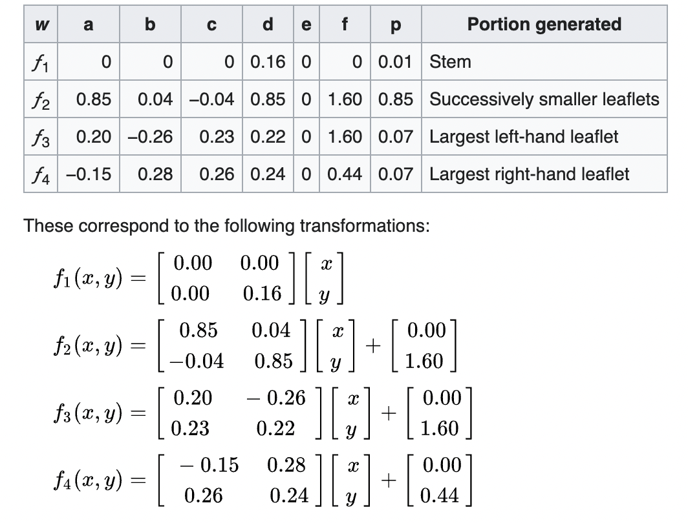

The Barnsley fern is a self-similar mathematically generated pattern that can be reproducible at any magnification or reduction. Barnsley's fern uses four affine transformations. The formula for one transformation is the following:
In the table, the columns "a" through "f" are the coefficients of the equation, and "p" represents the probability factor.
Inspiration: Barnsley Ferns